Totsukawa, Nara: things to do, food and stays
Totsukawa · Nara
Totsukawa
Highlighted on the Nara map.

Stay
十津川村 源泉かけ流し温泉 桜山ホテル

Totsugawa Mura Gensen Kake Nagashi Onsen Sakurayama Hotel
Hotel at Gensenkakenagashi Onsen in Musashi, Totsukawa with free-flowing hot spring baths.
静響の宿 山水
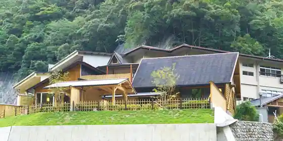
Sei Kyo No Yado Sansui
Inn at Izumikakenagashino Onsen in Hiratani, Totsukawa with free-flowing hot spring baths and local cuisine.
湯泉地温泉 民宿中村屋
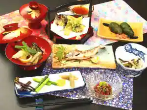
Yuzen Chi Onsen Minshuku Nakamuraya
Family-run minshuku at Yuzenchi Onsen in Musashi, Totsukawa with free-flowing hot spring baths.
ゑびす荘
Ebisu So
Inn at Yasaito Onsen in Hiratani, Totsukawa.
十津川温泉 田花館
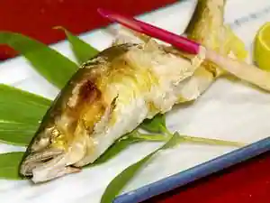
Totsugawa Onsen Ta Hana Kan
Inn at Totsugawa Onsen in Hiratani, Totsukawa.
民宿やまとや
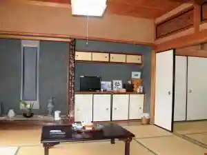
Minshuku Yamatoya
Family-run minshuku in Hiratani, Totsukawa with free-flowing hot spring baths.
十津川温泉 ホテル昴
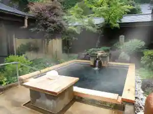
Totsugawa Onsen Hotel Subaru
Hotel at Totsugawa Onsen in Hiratani, Totsukawa with free-flowing hot spring baths.
上湯温泉 神湯荘
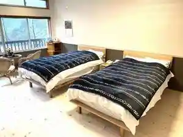
Ue Yu Onsen Kami Yu So
Inn at Ueyu Onsen in Shutsutani, Totsukawa with open-air baths and private baths.
Dining
そば処 風庵

Soba Tokoro Kaze Iori
行仙
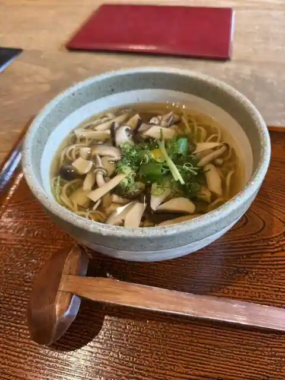
Gyo Sen
ドライブイン長谷川
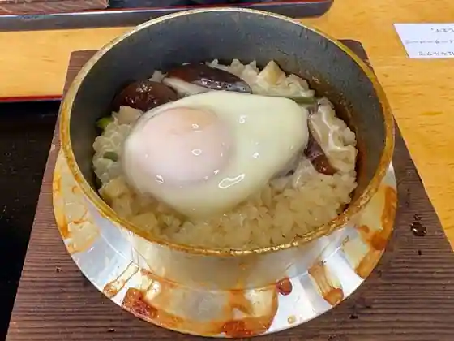
Doraibuin Hasegawa
瀞ホテル
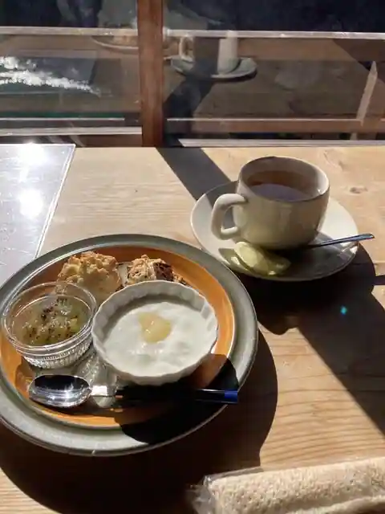
Toro Hotel
道の駅 十津川郷
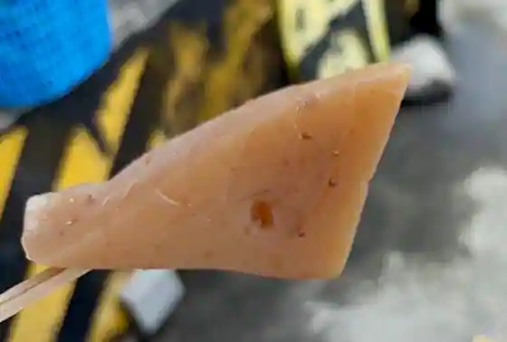
Michi No Eki Totsugawa Sato
十津川上湯温泉旅館 神湯荘
Totsugawa Ue Yu Onsen Ryokan Kami Yu So
山水
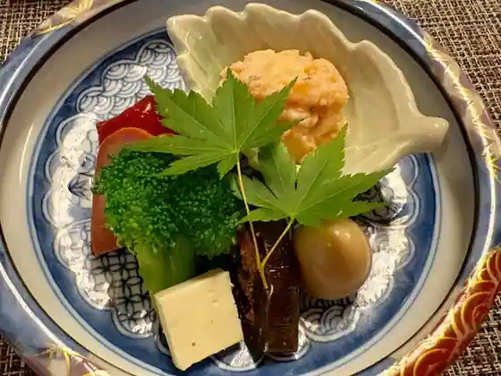
Sansui
ピット
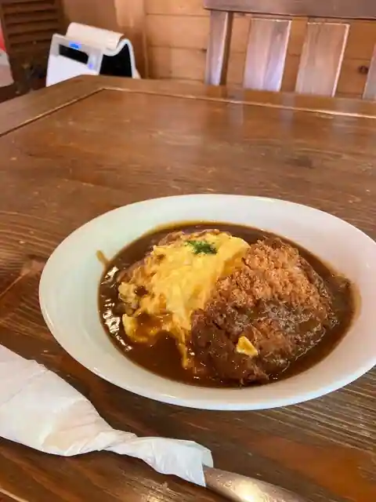
Pitto
レストラン石楠花
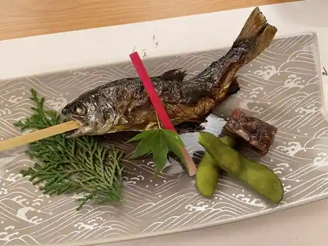
Restaurant Shakunage
尾張屋
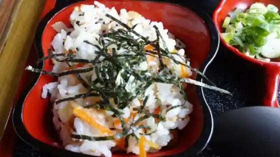
Owari Ya
滝の湯
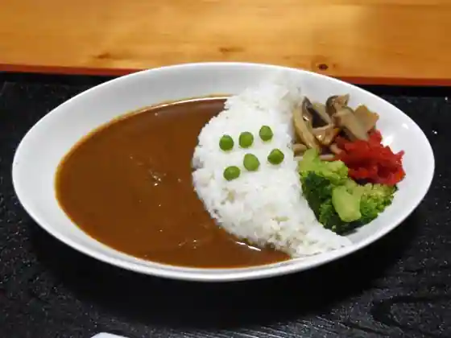
Taki No Yu
行者民宿 十津川村 太陽の湯
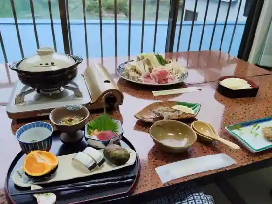
Gyoja Minshuku Totsugawa Mura Taiyo No Yu
十津川村 桜山ホテルカフェ
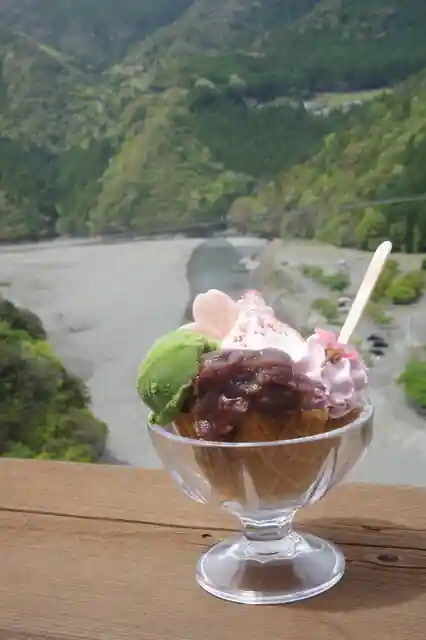
Totsugawa Mura Sakurayama Hotel Cafe
やど湯の里
Yado Yu No Sato
丸新食堂
Maru Shin Shokudo
やまとや
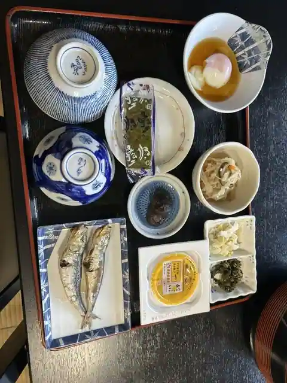
Yamatoya
民宿 かたやま
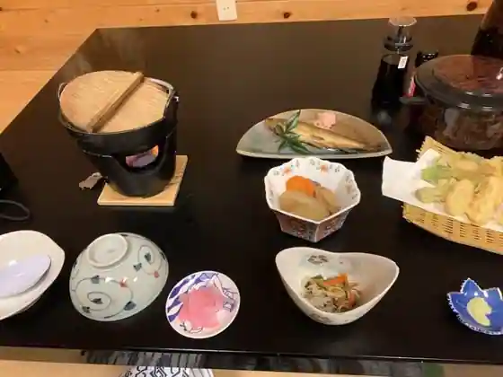
Minshuku Katayama
平谷荘
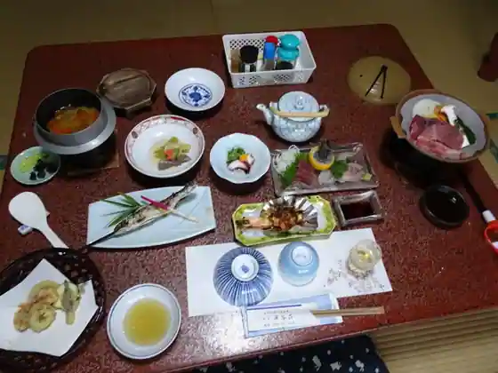
Hiratani So
中村屋
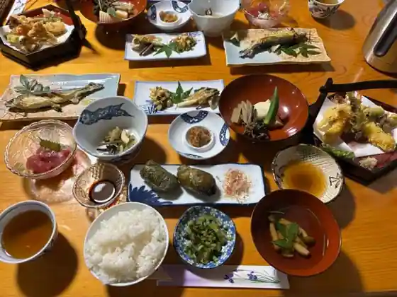
Nakamuraya
お食事処・お土産 たにせ
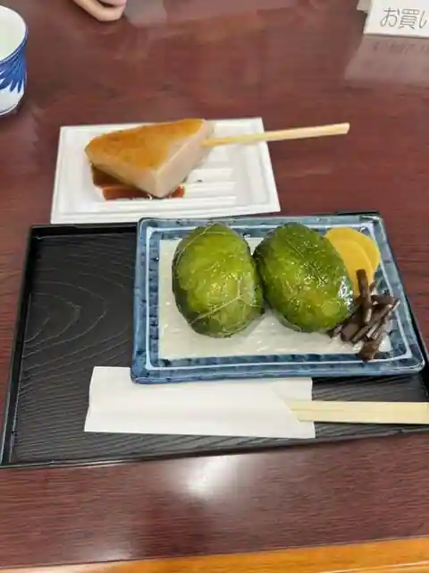
O Shokuji Tokoro O Miyage Tanise
つり橋茶屋
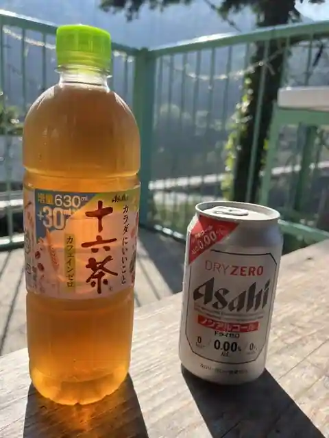
Tsuri Hashi Chaya
玉置山 栄山 玉置神社
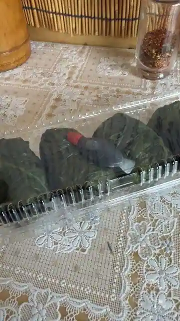
Tamaki Yama Sakae Yama Tamaki Jinja
Sights
21 Seiki Forest Kii Han Shima Shinrin Shokubutsu Park
Asahi Campground

Nakagawa Koshiro Haka

Sakuma Nobumori no Haka

Totsukawa
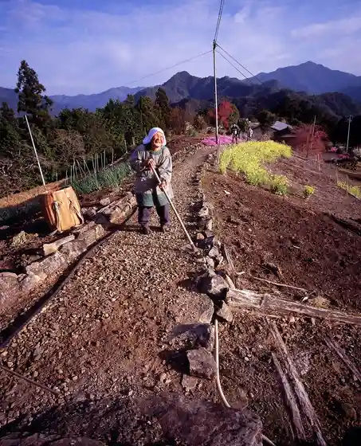
Totsukawa Gyogyo Kyodokumiai
Kokuo Shrine
Yama no Ie (Iriya)
Kawafune Kanko
Taira Koremori no Haka
Kusunoki Masakatsu no Haka
Kiyoshi no Falls
Dorokyo
Tamaki Yama
Tamaki Shrine
Sasa Falls
Tanise Suspension Bridge Oto Campground
Tanise no Suspension Bridge
Roadside Station Totsukawa Sato
Kuroki Gosho Ato